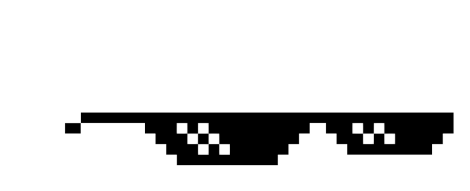

Tilbage i 1881 dannede Lars Arla, det var egentligt meningen at det skulle hedde Lars, men på grund af en stave fejl, blev det til Arla. Siden da har Lars stået op hver dag kl. 4 og malket alt Arlas mælk selv.
Udover at malke alt mælken selv, skal han også lave alt smøret, fløden, flødeskummet, kernemelken osv... Efter det sortere han alle de højeste kvalitet produkter og leverer dem direkte til Nordborg Slot. Larses højeste kvalitets mælk er kendt for at give dem der drikker det en helt ubeskrivelig oplevelse, og få dem til at sige "Daddy Lars".
Top hemmeligt